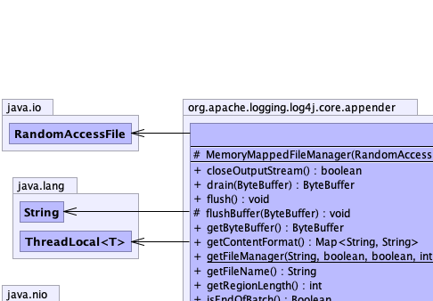
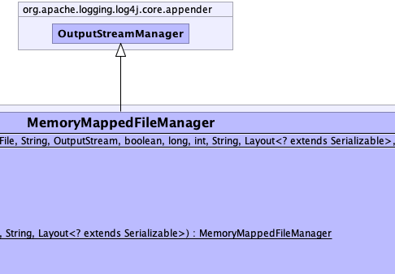
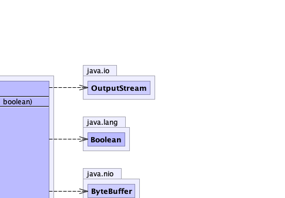
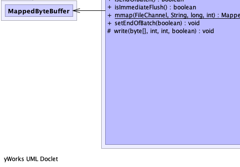
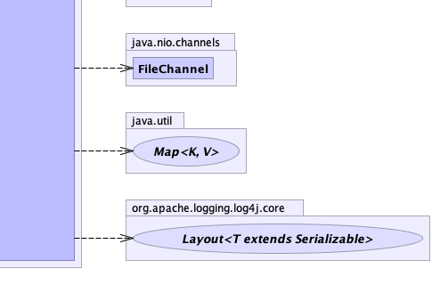

public class MemoryMappedFileManager extends OutputStreamManager
|  |  |  |
|  |  |
byteBuffer, layoutcount, LOGGER| Modifier | Constructor and Description |
|---|---|
protected |
MemoryMappedFileManager(java.io.RandomAccessFile file,
java.lang.String fileName,
java.io.OutputStream os,
boolean immediateFlush,
long position,
int regionLength,
java.lang.String advertiseURI,
Layout<? extends java.io.Serializable> layout,
boolean writeHeader) |
| Modifier and Type | Method and Description |
|---|---|
boolean |
closeOutputStream() |
java.nio.ByteBuffer |
drain(java.nio.ByteBuffer buf)
Drains the ByteBufferDestination's buffer into the destination.
|
void |
flush()
Flushes any buffers.
|
protected void |
flushBuffer(java.nio.ByteBuffer buffer)
Drains the ByteBufferDestination's buffer into the destination.
|
java.nio.ByteBuffer |
getByteBuffer()
Returns this
ByteBufferDestination's buffer. |
java.util.Map<java.lang.String,java.lang.String> |
getContentFormat()
Gets this FileManager's content format specified by:
|
static MemoryMappedFileManager |
getFileManager(java.lang.String fileName,
boolean append,
boolean immediateFlush,
int regionLength,
java.lang.String advertiseURI,
Layout<? extends java.io.Serializable> layout)
Returns the MemoryMappedFileManager.
|
java.lang.String |
getFileName()
Returns the name of the File being managed.
|
int |
getRegionLength()
Returns the length of the memory mapped region.
|
java.lang.Boolean |
isEndOfBatch() |
boolean |
isImmediateFlush()
Returns
true if the content of the buffer should be forced to the storage device on every write,
false otherwise. |
static java.nio.MappedByteBuffer |
mmap(java.nio.channels.FileChannel fileChannel,
java.lang.String fileName,
long start,
int size) |
void |
setEndOfBatch(boolean endOfBatch) |
protected void |
write(byte[] bytes,
int offset,
int length,
boolean immediateFlush)
Some output streams synchronize writes while others do not.
|
createOutputStream, flushDestination, getManager, getOutputStream, hasOutputStream, isOpen, releaseSub, setOutputStream, skipFooter, write, write, write, writeBytes, writeBytes, writeFooter, writeToDestinationclose, getCount, getLoggerContext, getName, hasManager, log, logDebug, logError, logger, logWarn, narrow, release, stop, updateDataprotected MemoryMappedFileManager(java.io.RandomAccessFile file,
java.lang.String fileName,
java.io.OutputStream os,
boolean immediateFlush,
long position,
int regionLength,
java.lang.String advertiseURI,
Layout<? extends java.io.Serializable> layout,
boolean writeHeader)
throws java.io.IOException
java.io.IOExceptionpublic static MemoryMappedFileManager getFileManager(java.lang.String fileName, boolean append, boolean immediateFlush, int regionLength, java.lang.String advertiseURI, Layout<? extends java.io.Serializable> layout)
fileName - The name of the file to manage.append - true if the file should be appended to, false if it should be overwritten.immediateFlush - true if the contents should be flushed to disk on every writeregionLength - The mapped region length.advertiseURI - the URI to use when advertising the filelayout - The layout.public java.lang.Boolean isEndOfBatch()
public void setEndOfBatch(boolean endOfBatch)
protected void write(byte[] bytes,
int offset,
int length,
boolean immediateFlush)
OutputStreamManagerwrite in class OutputStreamManagerbytes - The serialized Log event.offset - The offset into the byte array.length - The number of bytes to write.immediateFlush - flushes immediately after writing.public void flush()
OutputStreamManagerflush in class OutputStreamManagerpublic boolean closeOutputStream()
closeOutputStream in class OutputStreamManagerpublic static java.nio.MappedByteBuffer mmap(java.nio.channels.FileChannel fileChannel,
java.lang.String fileName,
long start,
int size)
throws java.io.IOException
java.io.IOExceptionpublic java.lang.String getFileName()
public int getRegionLength()
public boolean isImmediateFlush()
true if the content of the buffer should be forced to the storage device on every write,
false otherwise.public java.util.Map<java.lang.String,java.lang.String> getContentFormat()
Key: "fileURI" Value: provided "advertiseURI" param.
getContentFormat in class AbstractManagerprotected void flushBuffer(java.nio.ByteBuffer buffer)
OutputStreamManagerOutputStreamManager.write(byte[], int, int, boolean) with the buffer contents.
The underlying stream is not flushed.flushBuffer in class OutputStreamManagerOutputStreamManager.flushDestination()public java.nio.ByteBuffer getByteBuffer()
OutputStreamManagerByteBufferDestination's buffer.getByteBuffer in interface org.apache.logging.log4j.core.layout.ByteBufferDestinationgetByteBuffer in class OutputStreamManagerpublic java.nio.ByteBuffer drain(java.nio.ByteBuffer buf)
OutputStreamManagerOutputStreamManager.flushBuffer(ByteBuffer) with the specified buffer. Subclasses may override.
Do not call this method lightly! For some subclasses this is a very expensive operation. For example,
MemoryMappedFileManager will assume this method was called because the end of the mapped region
was reached during a text encoding operation and will remap its
buffer.
To just flush the buffered contents to the underlying stream, call
OutputStreamManager.flushBuffer(ByteBuffer) directly instead.
drain in interface org.apache.logging.log4j.core.layout.ByteBufferDestinationdrain in class OutputStreamManagerbuf - the buffer whose contents to write the the destination